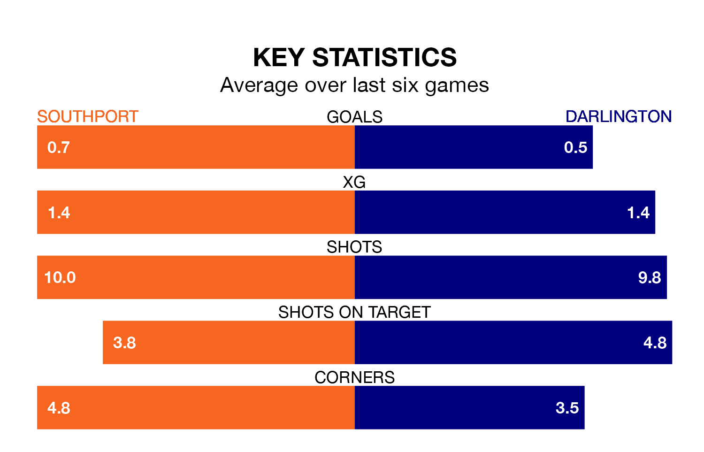

Darlington travel to the BIG HELP Stadium for Tuesday's late match against Southport looking to bounce back from defeat last time out in National League North and South.
Darlington, who sit zero in the league after 25 games, fell to a 2-0 away defeat to Scarborough Athletic on December 26.
They face a Southport side who also lost their last match, a 3-2 defeat to Curzon Ashton, and who sit zero in the table.
With 19 goals in 25 games so far this season, Darlington are the league's-23th-lowest scorers with 0.8 goals per game. And they are conceding more than average, letting in 48 goals at a rate of 1.9 per game.
Southport are also below average scorers, with 1.1 goals per game, compared to a league average of 1.4. They have conceded 1.9 goals per game.
The Sandgrounders are in bad form in National League North and South, with one win and a draw from their last six games.
With a win and two draws over that period, the away team's form is slightly better – they have taken five points from 18, compared to the hosts' four.
In the last five years, Southport and Darlington have played each other on eight occasions. Southport won two of them, Darlington three, and they drew three times.
On average, the Sandgrounders scored 0.9 goals and Darlington 0.9 in those matches.
Their last meeting was on January 31, when they played out a 0-0 draw.
Updated: 15:34, 08/01/24